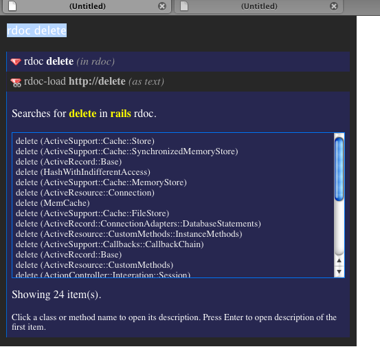
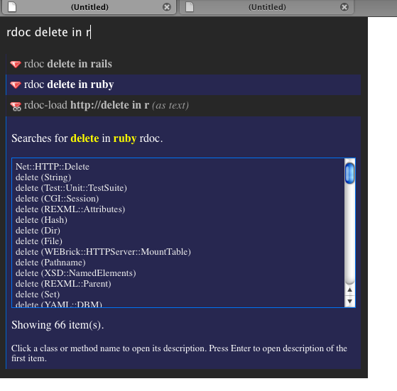
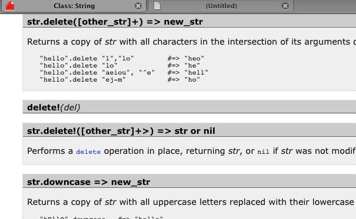
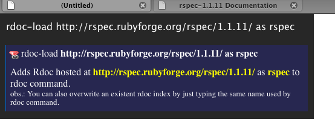
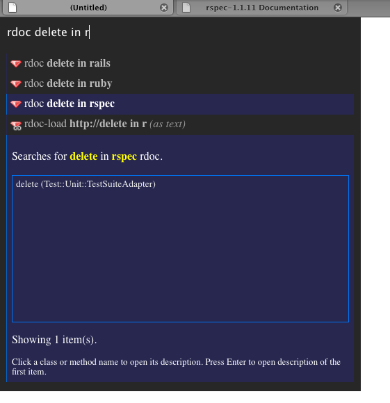
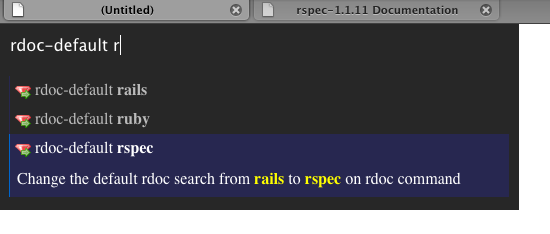
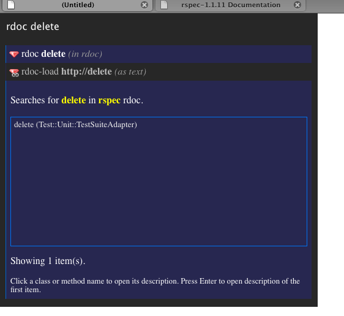

Author: Luis Cipriani (lfcipriani at talleye dot com)
Contributors: Tino Gomes
Follow this project on GitHub: http://github.com/lfcipriani/ubiquity-rdoc/tree/master
A set of Mozilla Ubiquity commands for searching on Ruby rdocs.
Do the following steps:
Install: Mozilla Ubiquity Wiki
Learn: Ubiquity User Tutorial
Or watch this video
Nice and easy.
After install Ubiquity, just access this page and follow the steps in Teaching Ubiquity New Commands
Ok, let's suppose that we want to read the description of "delete" method in rails, just start typing 'rdoc delete' and a box will show some suggestions:
But, in fact, we really want to access the "delete" method of ruby rdoc. Just continue typing 'in ruby'
Yes, rdoc command could switch the rdoc used on searching by just adding the modifier 'in + [rdoc name]'
Then, to access the documentation you could click an item or press enter to access the first item of the list. In the following picture, we clicked on "delete (String)" method.
Ubiquity-RDoc is released with rails and ruby rdocs, but, if you already know every method or class of these libraries and need to search on a different rdoc (for example, rspec), don't worry, you can load it by simply typing 'rdoc-load + [base URL] + as + [rdoc name]':
Base URL is the main page address of the rdoc, without 'index.html'. RDoc name is the name that you want to use when searching rdoc command, you can overwrite an existent rdoc index by just typing the same name used by rdoc command.
You could also use the 'rdoc-unload' command to remove unused rdocs.
Now, we can search on rspec documentation:
Finally, you could also change the default rdoc name used in searches. Type 'rdoc-default rspec'
And then, rdoc delete
Any suggestion, bugs, etc, please, e-mail me: lfcipriani at talleye dot com
This project is also hosted on GitHub: http://github.com/lfcipriani/ubiquity-rdoc/tree/master
Icons created by FAM FAM FAM